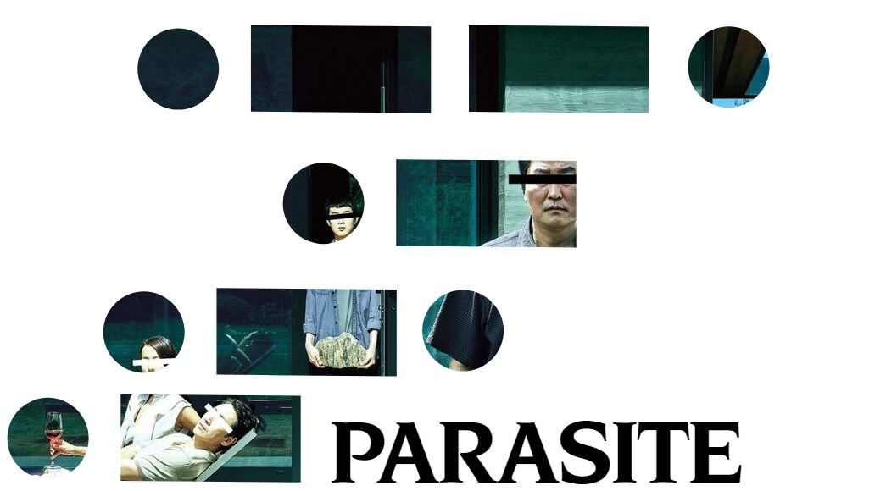
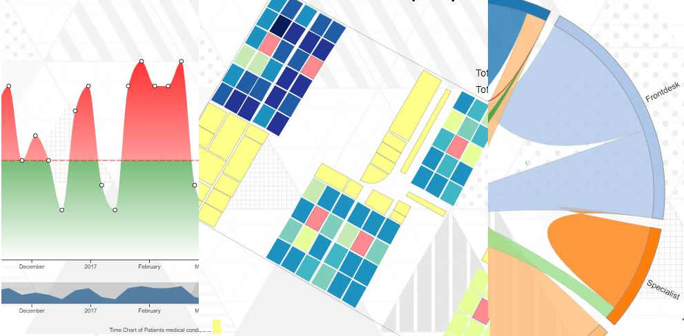

Javier Sanchez
Data visualization portfolio
Start scrolling
Data Visualization Stories
 Data Report adressing the state of freelancing in France. Made for Malt (largest freelancing platform of France)
Data Report adressing the state of freelancing in France. Made for Malt (largest freelancing platform of France)
 Cinema story of San Francisco
Cinema story of San Francisco
A Data Visualization tribute to 2019 Korean film Parasite
Data Report adressing the state of freelancing in France. Made for Malt (largest freelancing platform of France)Cinema story of San FranciscoRaw Vizs
 Visualizing the 8 seasons of Game of Thrones. Made with D3 for a Webinar.
Visualizing the 8 seasons of Game of Thrones. Made with D3 for a Webinar.
Animated poster of Netflix film Roma. Made with D3 and Photoshop.
Some interactive health data visualizations.
Visualizing the 8 seasons of Game of Thrones. Made with D3 for a Webinar. 
About me
I hold a Msc. in Telecommunications and I have worked both as a data scientist and analyst in several IT companies.My favorite part of my job has always been to create business impact with visualizations and visual narratives.
I am specialized into JavaScript visualization (D3.js,echarts.js...) and my data visualizations have been successfully used for software integration, branding & business presentations.
I am passionate about technological innovation & communicating results to different audiences. I would love to keep applying my knowledge on topics I am passionate about: IT, social behavior, health, media & entertainment, humanitarian causes & education.
Currently I work as a Freelance (open also for full time positions). If you need a unique data story or out-of-the-box visualization don't hesitate to contact me via email or LinkedIn.
Aside from Data Viz, my interests include filmmaking & photography. If you want to see my Photo portofolio KEEP SCROLLING!